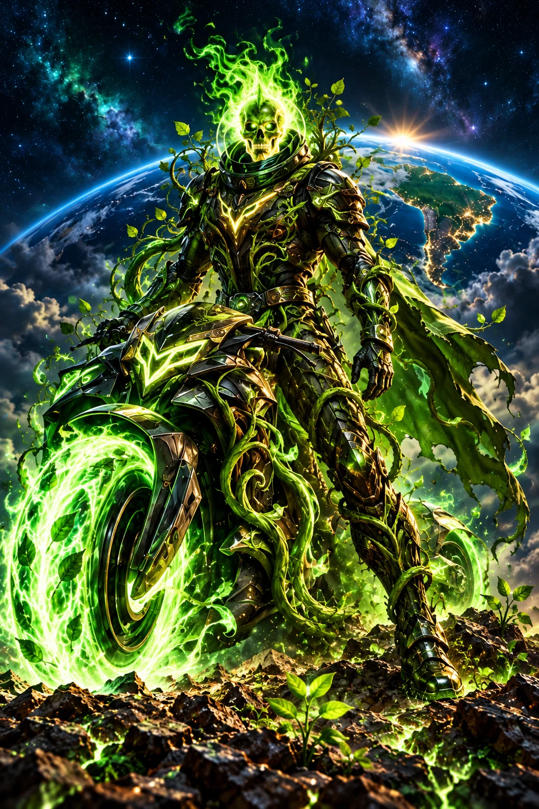

PODER 01
Bosque das órbitas
Ergue árvores de luz em terrenos cósmicos devastados, formando abrigos temporários para viajantes e criaturas de todos os mundos.

ARQUIVO DOS CAVALEIROS · 02 / 05
O futuro começa onde alguém decide cuidar.
Cuidado com a natureza
Personagem e poderes ficcionais do universo PLANO D. Fé, neurodiversidade e cuidado socioambiental inspiram sua jornada.
ORIGEM E TRANSFORMAÇÃO
Raiz guardava sementes num jardim orbital que imitava a Caatinga. A cada volta, via a Cobiça cobrir de metal as margens do planeta. Quis salvar o jardim fechando seus portões, até perceber que uma natureza protegida sem comunidade virava apenas coleção. Pediu a Deus discernimento e abriu espaço para os moradores conduzirem o cuidado. Com participantes neurodivergentes, criou trilhas sinalizadas, áreas tranquilas e escolhas de tarefas. Sua aura verde surgiu na primeira reunião em que ninguém precisou esconder seus limites para ser ouvido. Desde então, percorre florestas, sertões e mares, recolhendo sementes e devolvendo às comunidades o direito de decidir como proteger sua casa.
Na ficção, a força de Raiz ganha forma nestas três habilidades. Cada poder expressa um compromisso de cuidado.
PODER 01
Ergue árvores de luz em terrenos cósmicos devastados, formando abrigos temporários para viajantes e criaturas de todos os mundos.
PODER 02
Abre pequenos planetas luminosos que mostram os ciclos de uma floresta, de uma nascente ou de uma praia preservada.
PODER 03
Reúne o lixo espacial em espirais verdes e o transforma em solo estelar para novos jardins imaginários.
NO UNIVERSO DA HISTÓRIA
Guardar sementes e nascentes, buscar em Deus perseverança para enfrentar a cobiça e abrir caminhos acessíveis de participação neurodivergente, aproximando o cuidado com a natureza das necessidades humanas, sem decidir pelas comunidades ou exigir que alguém ultrapasse seus próprios limites.
UM PASSO POSSÍVEL HOJE
Conheça iniciativas da Caatinga, do litoral e das florestas. Escolha uma atividade compatível com seus recursos, peça orientações acessíveis e respeite a fauna, a vegetação e as regras locais existentes.
Explore a atuação, os canais oficiais de apoio e a transparência no diretório do PLANO D. A história é uma inspiração; estas instituições reais atuam de forma independente do universo ficcional.
CINCO CAMINHOS · UM PROPÓSITO
Narrativa autoral preparada com assistência de IA por solicitação do idealizador. Os cavaleiros são alegorias dos valores do PLANO D. Direitos e créditos ↗